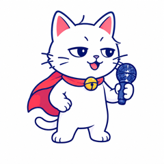
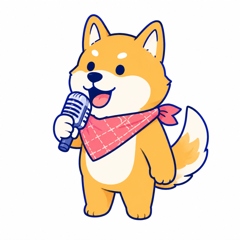
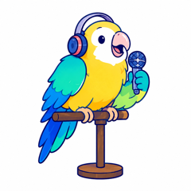
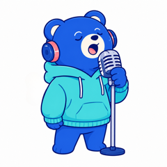
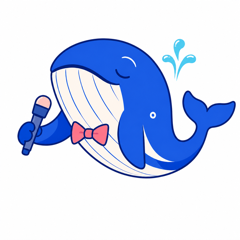
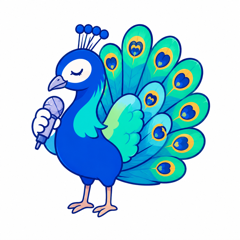

プロの耳が20年の経験できいて、あなたの声の魅力とタイプをみつけます。
話すことは、なんでも大丈夫。自己紹介や、今日の夕飯の話など。
押すと「3・2・1」のあと、録音がはじまります。最大3分・好きなときに止められます
まわりの音が大きいと、きき取りの精度が下がります。歌は数値が出しにくいため、話し声でお願いします。
話す準備をしてください
やめる
録音中 0:00 / 3:00
話し終わったら「止める」を押してください。
この音声でよければ、OKを押してください
ステップ 2 / 3
✓ この音声で診断します
診断結果を、このアドレスにお送りします。 ※週1回メールマガジンが届きます。解除はカンタンです。
ハンドルネームでOK
ステップ 3 / 3
診断結果には反映されませんが、ボイストレーナーみかの発信の参考にさせていただきます。
個人情報の利用目的
個人情報の取り扱い
結果は、ご入力のメールアドレスにお届けします。
ありがとうございます！
結果は、ご入力のメールアドレスにお届けします。 届かないときは、迷惑メールフォルダをご確認ください。
お問い合わせ: mail@info.voice-mika.com
どんな声だったか、楽しみにしていてくださいね。